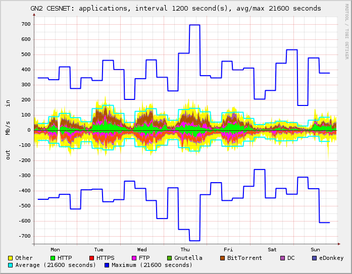
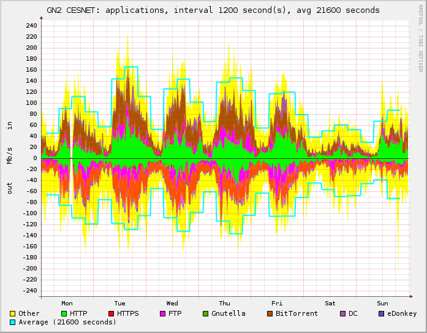

Draw maximum line
Maximum values for periods of time specified in "Avg/Max" field in the form
are computed from the original data samples normally received in one second
intervals. For long-term graphs, the maximum values can be much higher than
average values and can reduce clarity of the graph. For example, the first
graph below shows one week of monitoring including the maximum values, whereas
the second graph shows the same period of monitoring without the maximum values.
You can choose one of the following options:
- Yes - the maximum values will be shown in all generated graphs
- No - the maximum values will not be shown in all generated graphs
- Auto - the maximum values will be shown only in graphs covering time span of 30 minutes or less

